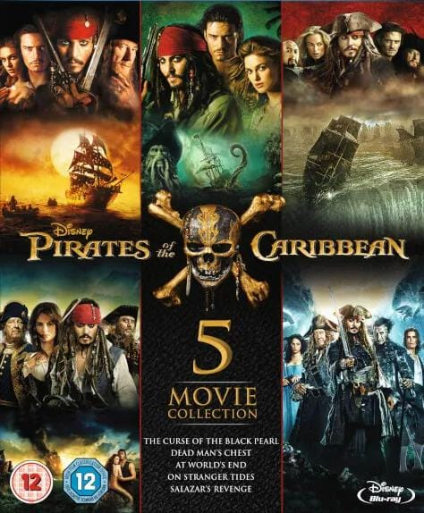
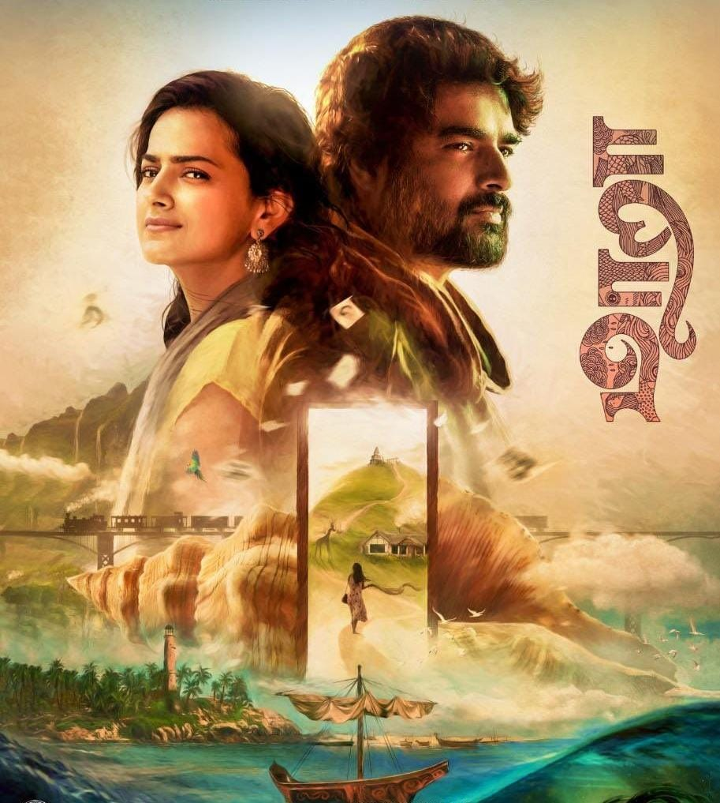

PIRATES OF THE CARIBBEAN
The "Pirates of the Caribbean" film series is a swashbuckling adventure franchise known for its blend of action, fantasy, and humor. It stars Johnny Depp as the iconic Captain Jack Sparrow and features memorable characters, witty dialogue, and thrilling action sequences. The series began with "The Curse of the Black Pearl" in 2003 and continued with several sequels, though opinions on their quality vary. Despite this, it remains a beloved and successful franchise that has entertained audiences with its high-seas escapades and supernatural elements.

MAARA
A young woman named Paaru notices a painting on the walls of a coastal town that depicts a fairy tale she once heard as a child. Intrigued, she sets out to find the person who painted it.
She is a restoration architect who comes to a small coastal village in Kerala for a project, while avoiding a marriage set-up back home.